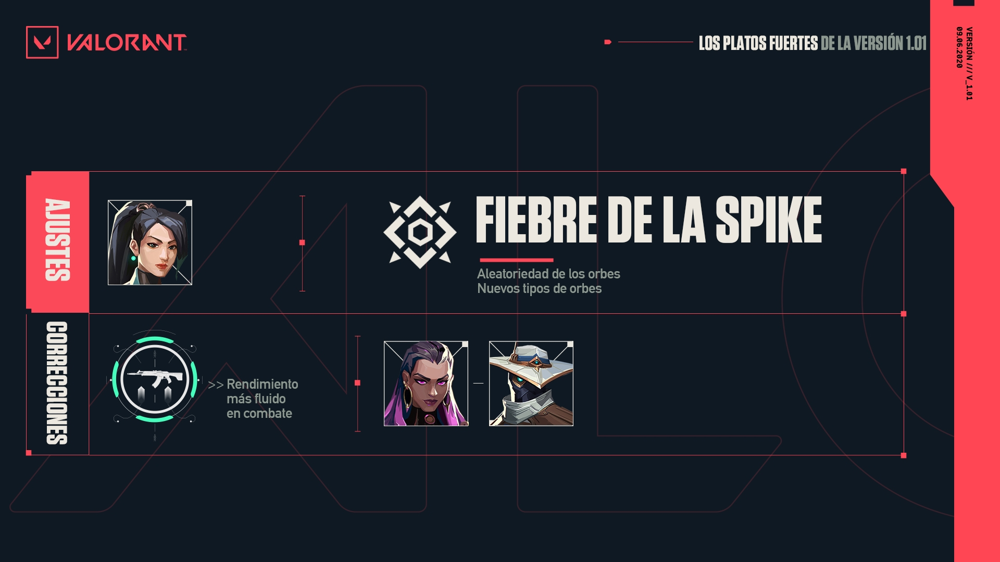
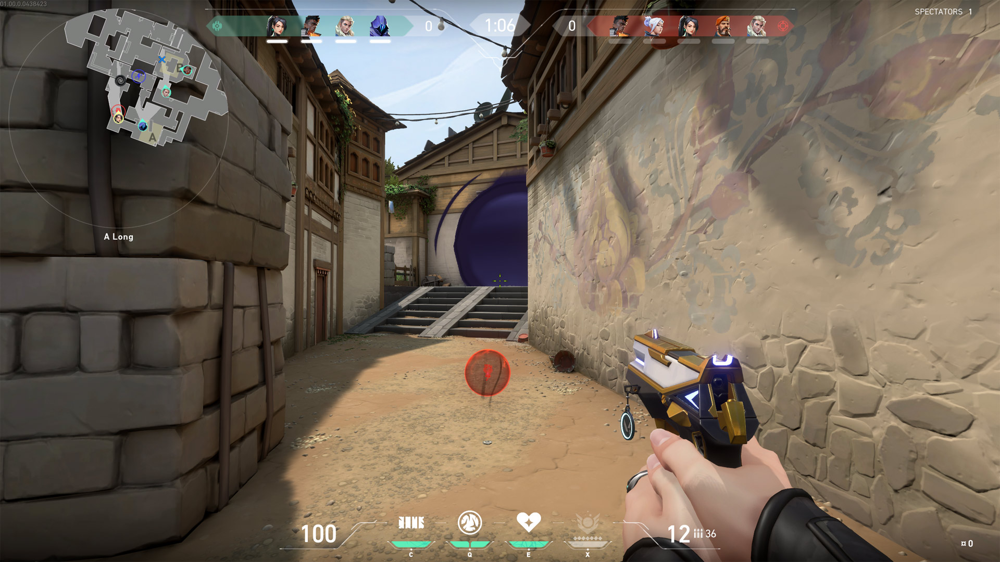

Noticias
Parche 1.01
Sorpresa! No nos engañéis, que sabemos que no os esperabais una versión nueva esta semana.
Es más ligerita que la anterior, eso sí, pero incorpora más cambios para mejorar el rendimiento del juego y se centra en homogeneizar la experiencia en combate y añadir mayor compatibilidad con ordenadores de gama alta.
Además, nuestro nuevo modo de juego, Fiebre de la Spike, recibe una selección adicional de orbes con los que divertirse. Entre ellos está, por ejemplo, un orbe de arma dorada que os permitirá acabar con cualquier enemigo de un solo disparo.
También traemos otra debilitación para Sage. No la hemos tomado con los sanadores, es que se la merece.

EXPERIENCIA DE JUEGO Y EQUILIBRIO
SAGE
Se reduce el alcance del lanzamiento de Orbe barrera: 20 m >>> 10 m.
En su papel de centinela, Sage debería ser más efectiva a la hora de defender terreno que su equipo ya ha conseguido controlar. Lanzar Orbe barrera a 20 m de distancia le estaba permitiendo utilizar la habilidad de forma agresiva para avanzar por terreno neutral, y esto no estaba en línea con lo esperado de su rol. Esta reducción del alcance debería garantizar que siga siendo potente al defender pero resulte algo menos eficaz a la hora de realizar jugadas agresivas.
ACTUALIZACIONES DE MAPAS
Ascent
Se han solucionado varios errores que estaban provocando que las armas se cayeran a través del terreno y problemas de penetración de paredes.
Todos los mapas
Se han modificado los nombres de algunos anuncios para que encajen mejor con la terminología de los jugadores.
ACTUALIZACIÓN DE FIEBRE DE LA SPIKE
Las partidas de Fiebre de la Spike ahora incluyen una selección aleatoria de 5 orbes.
El orbe que carga la definitiva siempre estará entre ellos.
Los otros 4 orbes se seleccionarán de forma aleatoria de entre las 7 variantes restantes.
Los orbes seleccionados se mostrarán en una lista de descripciones que aparecerá en la selección de agente y durante la prerronda.
Nuevos tipos de orbes
Orbe de vida - Otorga regeneración a todo el equipo de forma instantánea.
20 s de duración.
12 de vida por segundo (3 por pulso).
Los efectos visuales y de sonido solo se activarán cuando el jugador se esté curando.
Orbe de engaño - Aplica Paranoia a todo el equipo enemigo 3 s después de ser capturado.
10 s de duración.
Reduce en gran medida el campo visual (y lo desplaza ligeramente).
Los jugadores afectados escucharán pisadas y disparos falsos.
El minimapa se desactiva.
Orbe de arma dorada - Otorga al jugador que lo capture un arma dorada que:
Mata de un disparo.
No pierde precisión al disparar.
Hace que el portador se mueva a la misma velocidad que con la navaja.
Tiene una sola bala en el cargador y dos de repuesto.
Obtiene una bala adicional al conseguir un asesinato.
Otros cambios
Nuevo elemento del HUD durante la prerronda que muestra los tipos de arma y los orbes que podrán aparecer durante la ronda.
Ahora los jugadores obtienen un punto de la definitiva al recoger cualquier orbe.
ACTUALIZACIONES DE RENDIMIENTO
Esta versión se centra en mejorar el rendimiento durante el combate y en general en ordenadores de gama alta. El juego debería resultar aún más estable durante los combates y es probable que, en algunos ordenadores, suba la media de FPS en una amplia variedad de situaciones.
Mejoras de combate: Hemos conseguido arreglar unos cuantos problemas que estaban afectando a los FPS en combate.
Los diseños de arma de casi todos los jugadores no cargaban adecuadamente. Por ello, la primera vez que un jugador se encontraba con estos diseños en la partida, experimentaba una caída de FPS.
Hemos reducido la caída de FPS que provocaba la aparición y desaparición de anuncios de asesinatos.
Se ha mejorado el rendimiento de los elementos del HUD de Viper, que estaban experimentando problemas de rendimiento.
Aumento de FPS en ordenadores de gama media/alta: Hemos corregido en el código del juego algunos problemas que estaban limitando la potencia de los procesadores. Es posible que los ordenadores gama baja también se beneficien de los cambios, pero solo durante el combate.
Se ha añadido compatibilidad con renderizado multinúcleo para los equipos de gama alta. Si vuestro ordenador cumple los requisitos necesarios, podréis activar o desactivar esta característica desde el menú de calidad de los gráficos. Para los equipos que dispongan de esta opción, aparecerá activado por defecto.
El renderizado multinúcleo mejora el rendimiento en las situaciones en las que el coste de renderizar todos los objetos en pantalla es mayor que el de la simulación y el renderizado del juego en la tarjeta gráfica. Estos casos suelen darse en circunstancias en las que el jugador se desplaza por zonas con muchos objetos visibles (como la zona de aparición de los atacantes en Split) y en los casos en los que la simulación del juego no tiene un coste alto (como el campo de práctica o las etapas sin combate).
Los conos de visión del minimapa ahora se procesarán en otro núcleo cuando sea posible.
Se han revisado los efectos visuales de todos los mapas para reducir el coste de recurrir al procesador para las partículas correspondientes; ahora la tarjeta gráfica gestionará una parte mayor de la simulación.
Se han revisado las estadísticas de rendimiento del cliente para que ofrezcan información más detallada sobre los tiempos de los fotogramas.
MEJORAS DE CALIDAD
Dardo de reconocimiento de Sova se comportará de forma más coherente y solo revelará la parte de los enemigos que estén detrás de una pared.
Se ha añadido una opción que permite mostrar el inventario en todo momento.
Las alertas ya no se quedarán fijas sobre los modelos de aliados y enemigos cuando se lanzan detrás de ellos.
Ahora la pantalla de transición al final de la partida mostrará el mapa en el que acabáis de jugar en lugar de a Brimstone y Sage caminando hacia un teleportador.
En el campo de tiro, el cambio de agente utiliza ahora una IU más ligera y con mejor rendimiento que la requerida para las partidas normales.
Las misiones de la pantalla de fin de partida ahora aparecerán organizadas según el progreso y el tipo.
Se han implementado pequeñas mejoras visuales a las recompensas de los contratos y del pase de batalla que aparecen en la barra de progresión de la parte superior de la pantalla.
CORRECCIÓN DE ERRORES
Se ha corregido un error que provocaba que las partículas traslúcidas, como las pantallas de humo, se mostraran a pesar del efecto de visión limitada de Reyna.
Se ha corregido un efecto visual que oscurecía la pantalla de Reyna si apuntaba con la mira mientras se curaba.
La curación adicional de Reyna ya no muestra un total incorrecto de 151 de vida cuando alcanza el máximo.
Las cámaras espías de Cypher que se colocan en los marcos del teleportador de Bind ya no muestran imágenes de una zona subterránea.
Prisión cibernética de Cypher ya no impide que se cierren las puertas del teleportador de Bind.
Los indicadores de área de efecto de Proyectil de reconocimiento de Sova y Mirada lasciva de Reyna ahora solo se muestran en el minimapa enemigo si hay algún miembro de ese equipo cerca del área afectada.
Se ha solucionado un error que provocaba que algunas partes de la IU de agente se mostraran en modo espectador.
Se solucionado un error que provocaba que los brazos de un jugador muerto en primera persona parecieran estar flotando en el aire.
Se ha solucionado un error por el que utilizar un grafiti obligaba al jugador a dejar de disparar apuntando por la mira.
Se ha solucionado un error que hacía que activar los indicadores de balas desactivara los destellos de cañón en algunas armas, además de los indicadores.
Se ha solucionado un error que provocaba que el cursor parpadeara cuando se desplazaba sobre la tabla de puntuaciones.
Se ha solucionado un error que provocaba que el contador de la ronda no mostrara los milisegundos correctos.
Se ha solucionado un error con los atajos de teclado que hacía que los mensajes de conflicto al tratar de crear atajos no se mostraran correctamente.
Se ha solucionado un error del modo espectador que hacía que el personaje del jugador desde el que se observaba la partida no tuviera retrato.
Se ha solucionado un error que hacía que las armas automáticas no mostraran indicadores de balas ni efectos de sonido cuando se disparaban en breves ráfagas.
Se ha solucionado un error que hacía que la barra de desactivación de la Spike apareciera duplicada.
Se ha solucionado un error que hacía que los ajustes de voz y de dispositivos de sonido no se guardaran al cerrar sesión.
Se han solucionado varios errores de localización en las pantallas de fin de partida.
Se han solucionado una serie de errores visuales en las pantallas de fin de partida.
Se ha solucionado un error que surgía al enviar susurros a jugadores con el mismo nombre y se han implementado varias mejoras al sistema de mensajes directos.
Se ha mejorado el servicio de mensajes de error del chat.
El menú de ajustes ahora se muestra correctamente reducido.
En la página de agentes, hacer clic en "Colección" ahora devuelve correctamente a la página del arsenal.
Fiebre De La Spike y Nuevos Modo De Juego
"¡Saludos! Me llamo Jared Berbach, soy productor y jefe de producto de modos de juego de VALORANT, y me acompaña el veterano diseñador Bobby Prochnow (puede que os suene más por "excal" del equipo de desarrolladores). Estamos trabajando con un pequeño equipo de fantásticos desarrolladores para dar forma al ecosistema de modos de VALORANT.
Vayamos directos al grano. Seguramente os estaréis preguntado: pero ¿qué modos? VALORANT cuenta con un modo que sabemos que conocéis y adoráis: ese en el que la experiencia de juego consiste en colocar y defender la Spike. Y, aunque ese modo basado en la experiencia de shooter táctico va a seguir recibiendo la mayor parte de nuestra atención, nos gusta imaginar VALORANT como un juego con el potencial ilimitado de incluir más modos y de expandirse en el futuro. Nos encantaría crear modos para todos los tipos de jugadores, necesidades, actitudes y estados de ánimo.
Ahora que el juego ya ha salido, es probable que ya hayáis jugado a nuestro primer nuevo modo. En caso contrario, permitidnos presentaros algo que esperamos que aporte sabor a vuestra ración táctica de disparos: ¡Fiebre de la Spike (BETA)!
"¿QUÉ TENGO QUE SABER AL RESPECTO?"
Las partidas duran unos 8–12 minutos.
Colocad la Spike (no, no estamos delirando, ¡ahora todos los atacantes tienen una Spike!).
Se juega al mejor de 7 rondas (de menor duración, así como el tiempo de prerronda).
A las 3 rondas se cambia de ataque a defensa, o viceversa.
Los jugadores de ambos equipos reciben la misma arma aleatoria. Podréis hacer realidad la fantasía de ir todos con la Bucky.
Cada ronda, disponéis gratuitamente de todas las habilidades básicas.
Obtenéis 2 puntos de definitiva por asesinatos y muertes.
En cada ronda, se seleccionan aleatoriamente de 3 a 5 orbes de mejoras especiales que aparecen en el mapa.
"ESPERA, ¿QUÉ? ¿ORBES DE MEJORAS?"
¡Sí! Cuando entréis en una ronda, veréis iconos con signos de interrogación en el minimapa que indican el lugar en el que aparecerán orbes en esa ronda. Unos segunditos antes de que empiece la ronda, los orbes aparecerán y revelarán las mejoras que os otorgarán si los recogéis. Los efectos varían mucho: os permitirán desde mejorar el arma hasta infligir más daño (¡o aplicar plaga a todo el equipo enemigo!)tore

"VALE, MOLA, PERO ¿A QUÉ VIENEN LOS MODOS NUEVOS? ¿A QUÉ, EH?"
A ver, a todos nos encantan las partidas de 52 minutos en un constante tira y afloja de 25 rondas, con remontadas flipantes, pero a menudo ocurre que no disponemos de tanto tiempo para jugar a VALORANT. Queríamos crear un modo al que podáis dedicarle menos de 15 minutos, en el que estéis activos más tiempo, y con mayor margen para probar nuevos personajes, habilidades y armas en un ambiente más relajado.
"¿FIEBRE DE LA SPIKE ESTARÁ DISPONIBLE SIEMPRE?"
Pretendemos que el ecosistema de modos de VALORANT no deje de evolucionar. Queremos contar con modos permanentes que siempre tengáis disponibles y de los que disfrutar mucho tiempo, modos en rotación que reflejen ideas innovadoras y puede que también modos por tiempo limitado que nos permitan volvernos locos. Dentro de ese ecosistema, el lugar que ocupe Fiebre de la Spike dependerá enormemente de otros modos que creemos en el futuro próximo, así como de cuánto os guste.
El modo está en beta ahora mismo. Podría ser un modo en rotación, o puede que terminemos eliminándolo. También cabe la posibilidad de que se quede mucho tiempo. A corto plazo, tenemos planeado seguir evolucionándolo añadiendo más orbes y realizando otros cambios potenciales. ¡Su destino está en vuestras manos y en las del tiempo!
"GENIAL, ¿Y QUÉ MODO IRÁ DESPUÉS? COMBATE A MUERTE, ¿NO?"
¡Qué bien que nos lo preguntéis! Sabemos que habrá cantidad de modos que querréis ver en VALORANT. Ya estamos escuchando a nuestro público de la beta pedir a gritos un modo al estilo de combate a muerte. Todavía no nos podemos comprometer a daros una fecha concreta, pero nuestro equipo tiene muy en cuenta vuestros deseos, así que estamos empezando a construir parte de la tecnología que necesitaremos para incorporar un modo al estilo combate a muerte.
Como desarrolladores que adoran la competición, nos sentimos identificados con el deseo que mostráis por un tipo de juego que se traduzca en calentamiento, asesinatos, dominio de armas y disparos a "objetivos reales" para mejorar la puntería.
También estamos generando prototipos para muchos otros modos.
Concluiremos con nuestra filosofía de ahora en adelante: queremos pronunciarnos a favor de dejar modos nuevos en manos de la comunidad lo antes posible y de evolucionar esos modos junto a los jugadores, codo con codo. ¡Queremos ver y escuchar lo que opináis! ¿Qué modos os gustaría ver en VALORANT? ¿Qué tipo de experiencia queréis que haya en VALORANT que no estemos cubriendo en la actualidad? ¿Cómo podemos ayudaros a calmar vuestra sed?
"¡TENGO COSAS QUE DECIR!"
Instagram, Reddit, donde sea: ¡estamos ahí leyendo vuestros comentarios! Me encontraréis en Twitter como @Darkhorse4Life y, aunque en su perfil diga que se le dan mal las redes, también podéis escribirle a @BobbyProchnow. Nos gustaría que nos contarais vuestras experiencias jugando a Fiebre de la Spike, o qué modos os apetece que incluyamos en el futuro.
Gracias por acompañarnos. ¡Esto es solo el principio!